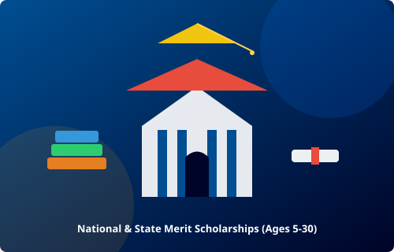
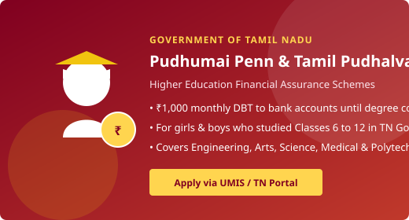

National & State Student Scholarships by Age

Education is the strongest ladder for social mobility, yet thousands of capable students discontinue their studies simply due to financial constraints. The Benefit Bridge student scholarship framework removes this hurdle by categorizing every central, state, and private endowment scholarship into clear, age-specific brackets. From primary school uniforms and textbooks to doctoral research stipends, there is verified financial support ready to accompany every student throughout their academic journey.
Students between the ages of 5 and 14 benefit from universal pre-matric allowances, talent search prizes, and special incentives for the girl child. Once students transition into higher secondary education (ages 15 to 18), merit grants recognize high performance in STEM subjects, commerce, and humanities. For undergraduate and postgraduate scholars (ages 18 to 25+), scholarships cover full tuition fees, hostel expenses, and provide monthly living stipends paid directly through DBT.
Scholarship Categories by Age Group
Pre-Matric School Aid
Ages 5 – 14Primary & Upper Primary (Classes 1 to 8)
- National Means-cum-Merit: Rs. 12,000/year for qualifying Class 8 exam.
- Free Uniforms & Textbooks: 100% covered under Right to Education (RTE).
- Mid-Day Meal & Health Checks: Nutritious meals + annual vision screening.
- Special Girl Child Stipend: Additional Rs. 3,000 bonus for high attendance.
Higher Secondary & STEM
Ages 15 – 18Secondary & Senior Secondary (Classes 9 to 12)
- INSPIRE Science Award: Rs. 10,000 one-time grant for science innovation projects.
- Post-Matric State Aid: Up to Rs. 20,000/year for tuition and coaching supplies.
- KVPY / Olympiad Fellowships: Full tuition waiver for regional & national rankers.
- Single Girl Child CBSE Grant: Rs. 1,000/month for Classes 11 and 12.
Undergrad & Professional
Ages 18 – 25College, University & Technical Diplomas
- TN Pudhumai Penn / Tamil Pudhalvan: Rs. 1,000/month directly to TN govt school students.
- Central Sector Scheme (NSP): Rs. 12,000 – Rs. 20,000/yr for college merit holders.
- AICTE Pragati for Girls: Rs. 50,000/year towards college tuition & laptop purchase.
- TN Post-Matric Welfare Aid: 100% tuition waiver & hostel fees for eligible communities.
Postgrad & Research
Ages 25+ YearsMaster's, M.Phil, Ph.D. & Post-Doc Research
- UGC Junior Research Fellowship (JRF): Rs. 37,000/month + HRA for doctoral scholars.
- CSIR Research Grant: Rs. 42,000/month for advanced scientific research.
- National Overseas Scholarship: Up to $40,000/year for pursuing masters/PhD abroad.
- Prime Minister's Research Fellows: Rs. 70,000 – 80,000/month for IIT/NIT fellows.
How to Apply via Direct Benefit Transfer (DBT)
All central and state government scholarships are administered through unified online portals like the National Scholarship Portal (NSP) and state-specific portals like the Tamil Nadu e-Scholarship Portal. Ensure that your bank account is active and seeded with your Aadhaar number. When your application is verified by your educational institution and the nodal welfare officer, scholarship amounts are transferred straight to your bank account without any physical cheques or processing fees.
Official Application Portals

Frequently Asked Questions
What is the objective of this scheme? ˇ
The objective of the Tamil Nadu Pudhumai Penn and Tamil Pudhalvan schemes is to eliminate financial dropouts between Class 12 and higher education by providing a monthly allowance of Rs. 1,000 directly to government school students until they complete their undergraduate, diploma, or ITI degree.
Who is eligible for this scheme? ˇ
Students (both female and male) who studied in Tamil Nadu Government schools from Classes 6 to 12 and have secured admission into recognized colleges, universities, polytechnics, or ITI institutes are eligible.
What documents are needed to apply for student scholarships? ˇ
Students must keep the following documents scanned and ready before filing an online scholarship form:
- EMIS Number / Transfer Certificate: Proof of studying in Tamil Nadu Government schools from Classes 6 to 12.
- Aadhaar Card: Student's individual Aadhaar number linked with an active mobile number.
- College Bonafide Certificate: Signed admission confirmation or current semester ID from college principal.
- Bank Passbook: Active bank account under student's name (must be seeded with Aadhaar for DBT transfer).
- Community & Income Certificate: Revenue department issued digital caste certificate and income slip.
- Class 10 & 12 Marksheets: Official state board or CBSE mark statements.
How to apply online step-by-step? ˇ
Follow these 5 verified steps to submit your scholarship application online:
- Step 1 - Access Nodal Portal: Go to the official Tamil Nadu e-Scholarship Portal or your college's UMIS portal.
- Step 2 - Verify EMIS ID: Enter your 14-digit EMIS ID to automatically fetch verified government school education records.
- Step 3 - Enter Bank Account & Aadhaar: Enter your bank IFSC code and account number, followed by Aadhaar OTP authentication.
- Step 4 - College Nodal Verification: Submit online for instant verification by your college principal or scholarship nodal officer.
- Step 5 - Receive Monthly DBT Credit: Once approved, Rs. 1,000 is credited automatically to your account before the 7th of every month.
How is the scholarship amount credited? ˇ
The financial grant is transferred directly into the student's individual bank savings account via the Public Financial Management System (PFMS) and Direct Benefit Transfer (DBT) with zero transaction fees or intermediaries.